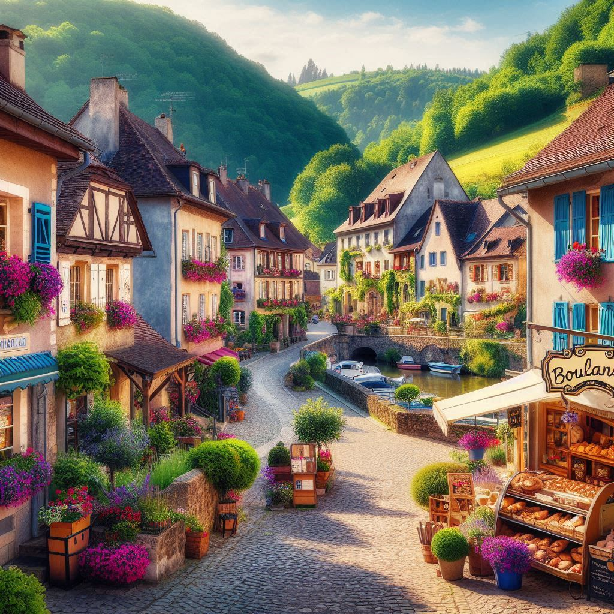

Un village
Au cœur d’une campagne verdoyante, une petite maison en pierre repose paisiblement, entourée de champs ondulants et de grands arbres. Le chant des oiseaux et le murmure d’un ruisseau proche bercent l’atmosphère. Une terrasse en bois, ornée de fleurs sauvages, invite à la contemplation des collines à l’horizon. Ici, le temps semble ralentir, offrant un havre de sérénité loin de l’agitation du monde.
12 Rue des Lilas
54321 Ville-sur-Mer
France
